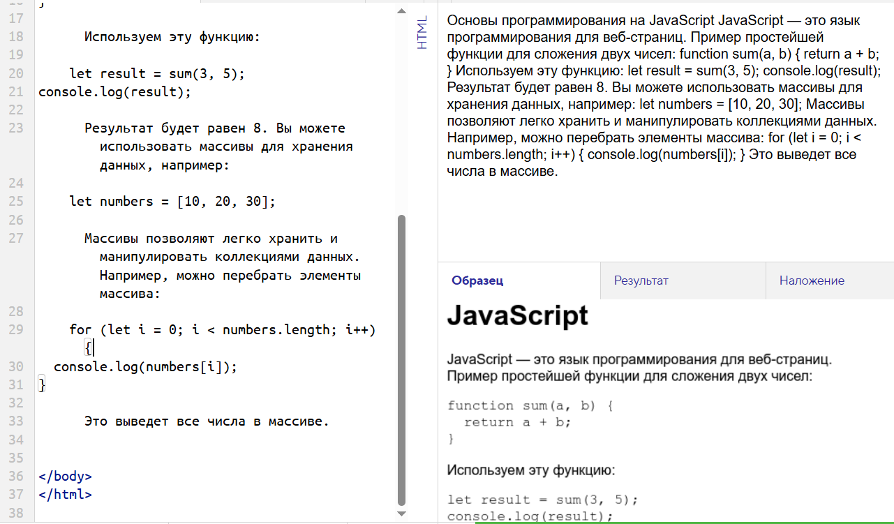

Основы программирования на JavaScript JavaScript — это язык программирования для веб-страниц. Пример простейшей функции для сложения двух чисел: function sum(a, b) { return a + b; } Используем эту функцию: let result = sum(3, 5); console.log(result); Результат будет равен 8. Вы можете использовать массивы для хранения данных, например: let numbers = [10, 20, 30]; Массивы позволяют легко хранить и манипулировать коллекциями данных. Например, можно перебрать элементы массива: for (let i = 0; i < numbers.length; i++) { console.log(numbers[i]); } Это выведет все числа в массиве.
